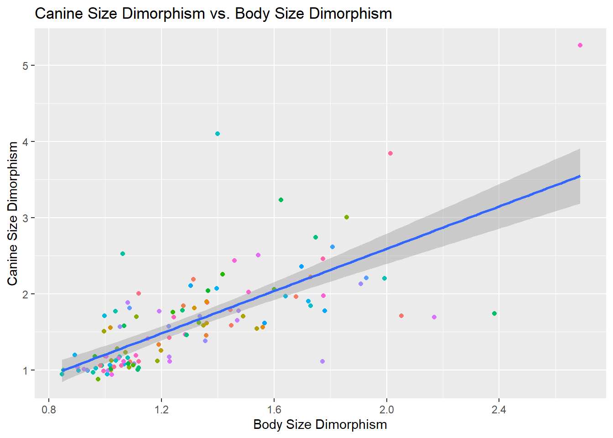

Rows: 213 Columns: 23
── Column specification ────────────────────────────────────────────────────────
Delimiter: ","
chr (6): Scientific_Name, Family, Genus, Species, Leaves, Fauna
dbl (17): Brain_Size_Species_Mean, Body_mass_male_mean, Body_mass_female_mea...
ℹ Use `spec()` to retrieve the full column specification for this data.
ℹ Specify the column types or set `show_col_types = FALSE` to quiet this message.
d <- d %>%mutate(BSD=Body_mass_male_mean/Body_mass_female_mean, sex_ratio=AdultFemale/AdultMales,DI=DayLength_km/(2*sqrt(HomeRange_km2/pi))) #calculate Home Range Diameter on the fly
Part 4: Day Range Length vs Move Time
Species-level
Relationship between day range length & time spent moving by species & family:
Species, without transformation:
p <-ggplot(data=d, aes(x=Move, y=DayLength_km)) +geom_point(aes(color=factor(Species)), na.rm=TRUE, show.legend =FALSE) +labs(title="Day Length Range (km) vs. Time Spent Moving", x="Time spent Moving", y="Day Length Range (km)")p +geom_smooth(method=lm, na.rm=TRUE)
`geom_smooth()` using formula = 'y ~ x'
Species, with transformation (log(Move), log(DLR):
p <-ggplot(data=d, aes(x=log(Move), y=log(DayLength_km))) +geom_point(aes(color=factor(Species)), na.rm=TRUE, show.legend =FALSE) +labs(title="log(Day Length Range (km)) vs. log(Time Spent Moving)", x="log(Move)", y="log(Day Length Range (km))")p +geom_smooth(method=lm, na.rm=TRUE)
`geom_smooth()` using formula = 'y ~ x'
Species, without transformation; Colored by Family:
p <-ggplot(data=d, aes(x=Move, y=DayLength_km)) +geom_point(aes(color=factor(Family)), na.rm=TRUE, show.legend =TRUE) +labs(title="Day Length Range (km) vs. Time Spent Moving", x="Time spent Moving", y="Day Length Range (km)")p +geom_smooth(method=lm, na.rm=TRUE)
`geom_smooth()` using formula = 'y ~ x'
Species, with log transformations; Colored by Family:
p <-ggplot(data=d, aes(x=log(Move), y=log(DayLength_km))) +geom_point(aes(color=factor(Family)), na.rm=TRUE, show.legend =TRUE) +labs(title="log(Day Length Range (km)) vs. log(Time Spent Moving)", x="log(Move)", y="log(Day Length Range (km))")p +geom_smooth(method=lm, na.rm=TRUE)
`geom_smooth()` using formula = 'y ~ x'
There seems to be a positive relationship between time spent moving and day length range (km) for individual species!
However, some families have a lot of internal diversity, such as the Cercopithecidae family, where many member species have similar movement times but different ranges. There also may be a negative relationship within the Hominidae family.
Family-level
Here’s the same data but aggregated to Family:
Family, without transformation:
s <- d %>%group_by(Family) %>%summarise(daylength_avg=mean(DayLength_km, na.rm=TRUE),move_avg=mean(Move, na.rm=TRUE))p <-ggplot(data=s, aes(x=move_avg, y=daylength_avg)) +geom_point(aes(color=factor(Family)), na.rm=TRUE, show.legend =TRUE) +labs(title="Day Length Range (km) vs. Time Spent Moving by Family", x="Time spent Moving", y="Day Length Range (km)")p +geom_smooth(method=lm, na.rm=TRUE)
`geom_smooth()` using formula = 'y ~ x'
Family, with log transformations:
s <- d %>%group_by(Family) %>%summarise(daylength_avg=mean(DayLength_km, na.rm=TRUE),move_avg=mean(Move, na.rm=TRUE))p <-ggplot(data=s, aes(x=log(move_avg), y=log(daylength_avg))) +geom_point(aes(color=factor(Family)), na.rm=TRUE, show.legend =TRUE) +labs(title="log(Day Length Range (km)) vs. log(Time Spent Moving) by Family", x="log(Move)", y="log(Day Length Range (km))")p +geom_smooth(method=lm, na.rm=TRUE)
`geom_smooth()` using formula = 'y ~ x'
Part 5: Day Range Length vs Group Size
Species-level
Relationship between day range length & group size by species & family:
Species, without transformation:
p <-ggplot(data=d, aes(x=MeanGroupSize, y=DayLength_km)) +geom_point(aes(color=factor(Species)), na.rm=TRUE, show.legend =FALSE) +labs(title="Day Length Range (km) vs. Mean Group Size", x="Mean Group Size", y="Day Length Range (km)")p +geom_smooth(method=lm, na.rm=TRUE)
`geom_smooth()` using formula = 'y ~ x'
Species, with transformation (log(MeanGroupSize), log(DLR):
p <-ggplot(data=d, aes(x=log(MeanGroupSize), y=log(DayLength_km))) +geom_point(aes(color=factor(Species)), na.rm=TRUE, show.legend =FALSE) +labs(title="log(Day Length Range (km)) vs. log(MeanGroupSize)", x="log(GroupSize)", y="log(Day Length Range (km))")p +geom_smooth(method=lm, na.rm=TRUE)
`geom_smooth()` using formula = 'y ~ x'
Species, without transformation; Colored by Family:
p <-ggplot(data=d, aes(x=MeanGroupSize, y=DayLength_km)) +geom_point(aes(color=factor(Family)), na.rm=TRUE, show.legend =TRUE) +labs(title="Day Length Range (km) vs. Mean Group Size", x="Mean Group Size", y="Day Length Range (km)")p +geom_smooth(method=lm, na.rm=TRUE)
`geom_smooth()` using formula = 'y ~ x'
Species, with log transformations; Colored by Family:
p <-ggplot(data=d, aes(x=log(MeanGroupSize), y=log(DayLength_km))) +geom_point(aes(color=factor(Family)), na.rm=TRUE, show.legend =TRUE) +labs(title="log(Day Length Range (km)) vs. log(MeanGroupSize)", x="log(MeanGroupSize)", y="log(Day Length Range (km))")p +geom_smooth(method=lm, na.rm=TRUE)
`geom_smooth()` using formula = 'y ~ x'
There seems to be a positive relationship between mean group size and day length range (km) for individual species!
However, some families have a lot of internal diversity, such as the Lemuridae family, where this positive relationship seems weaker than other families. It also appears that a simple linear model may not best represent the data. An exponential fit may represent the ‘upswing’ at the right-hand side of the graph.
Here’s an exponential fit:
p <-ggplot(data=d, aes(x=log(MeanGroupSize), y=log(DayLength_km))) +geom_point(aes(color=factor(Family)), na.rm=TRUE, show.legend =TRUE) +labs(title="log(Day Length Range (km)) vs. log(MeanGroupSize)", x="log(MeanGroupSize)", y="log(Day Length Range (km))")p +geom_smooth(method="lm", formula=(y ~exp(x)), na.rm=TRUE)
Family-level
Here’s the same data but aggregated to Family:
Family, without transformation:
s <- d %>%group_by(Family) %>%summarise(daylength_avg=mean(DayLength_km, na.rm=TRUE),mgs_avg=mean(MeanGroupSize, na.rm=TRUE))p <-ggplot(data=s, aes(x=mgs_avg, y=daylength_avg)) +geom_point(aes(color=factor(Family)), na.rm=TRUE, show.legend =TRUE) +labs(title="Day Length Range (km) vs. Mean Group Size, by Family", x="Mean Group Size", y="Day Length Range (km)")p +geom_smooth(method=lm, na.rm=TRUE)
`geom_smooth()` using formula = 'y ~ x'
The linear model doesn’t seem all too meaningful here.
Family, with log transformations:
s <- d %>%group_by(Family) %>%summarise(daylength_avg=mean(DayLength_km, na.rm=TRUE),mgs_avg=mean(MeanGroupSize, na.rm=TRUE))p <-ggplot(data=s, aes(x=log(mgs_avg), y=log(daylength_avg))) +geom_point(aes(color=factor(Family)), na.rm=TRUE, show.legend =TRUE) +labs(title="log(Day Length Range (km)) vs. log(MeanGroupSize), by Family", x="log(MeanGroupSize)", y="log(Day Length Range (km))")p +geom_smooth(method="lm", formula=(y ~exp(x)), na.rm=TRUE)
The relationship continues to be positive at the Family level, but the relationship appears weak.
Part 6: Body Size Dimorphism vs. Canine Size Dimorphism
Species-level
Relationship between body size dimorphism & canine size dimorphism by species & family:
Species, without transformation:
p <-ggplot(data=d, aes(x=BSD, y=Canine_Dimorphism)) +geom_point(aes(color=factor(Species)), na.rm=TRUE, show.legend =FALSE) +labs(title="Canine Size Dimorphism vs. Body Size Dimorphism", x="Body Size Dimorphism", y="Canine Size Dimorphism")p +geom_smooth(method=lm, na.rm=TRUE)
`geom_smooth()` using formula = 'y ~ x'

The clear linear relationship and distribution gives no need for log transformations here.
Species, without transformation; Colored by Family:
p <-ggplot(data=d, aes(x=BSD, y=Canine_Dimorphism)) +geom_point(aes(color=factor(Family)), na.rm=TRUE, show.legend =TRUE) +labs(title="Canine Size Dimorphism vs. Body Size Dimorphism", x="Body Size Dimorphism", y="Canine Size Dimorphism")p +geom_smooth(method=lm, na.rm=TRUE)
`geom_smooth()` using formula = 'y ~ x'
There seems to be a positive relationship between Body Size Dimorphism and Canine Size Dimorphism for individual species!
Again, there appears to be variation within family groups, even with the Atelidae showing a negative relationship.
Family-level
Here’s the same data but aggregated to Family:
Family, without transformation:
s <- d %>%group_by(Family) %>%summarise(bsd_avg=mean(Canine_Dimorphism, na.rm=TRUE),csd_avg=mean(BSD, na.rm=TRUE))p <-ggplot(data=s, aes(x=csd_avg, y=bsd_avg)) +geom_point(aes(color=factor(Family)), na.rm=TRUE, show.legend =TRUE) +labs(title="Canine Size Dimorphism vs. Body Size Dimorphism, by Family", x="Body Size Dimorphism", y="Canine Size Dimorphism")p +geom_smooth(method=lm, na.rm=TRUE)
`geom_smooth()` using formula = 'y ~ x'
The relationship continues to be positive at the Family level.
Part 7: Create diet_strategy variable dietary categories, plus boxplots for group size of species grouped by dietary strategy.
Create a new variable
Create diet_strategy with conditional statement. If Fruit or Leaves >= 50% of the diet, the species will be assigned the frugivore or folivore category, respectively. All other species will be assigned omnivore
d <- d %>%mutate(diet_strategy=case_when(Fruit>=50~"frugivore", Leaves>=50~"folivore", Fruit<50&Leaves<50~"omnivore"))%>%relocate(Scientific_Name, Family, Genus, Species, diet_strategy, Fruit, Leaves)print(d)
library(wesanderson)p <-ggplot(data=d %>%filter(!is.na(diet_strategy)), #remove NAs from plotsaes(x=diet_strategy, y=MeanGroupSize,fill=diet_strategy)) +#set aestheticsgeom_boxplot(alpha=0.4,na.rm=TRUE, show.legend=FALSE) +scale_fill_manual(values=wes_palette("GrandBudapest2"))+labs(title="Mean Group Size by Dietary Strategy", x="Dietary Strategy", y="Mean Group Size") #set labels p
There seems to be relatively little difference in mean group size by dietary strategy, although the omnivore data contains larger group sizes in its distribution.
Part 8: One-line Code Challenge with {dplyr} and forward piping
d_8 <- d #didn't want to overwrite d while testing this out, d_8 for d, part 8d_8 <- d_8 %>%mutate(Binomial=paste(Genus, Species, sep=" ")) %>%select(Binomial, Family, Brain_Size_Species_Mean, Body_mass_male_mean) %>%group_by(Family) %>%mutate(Brain_size_family_mean=mean(Brain_Size_Species_Mean, na.rm=TRUE), #I wanted to preserve genus/species dataBody_mass_male_family_mean=mean(Body_mass_male_mean, na.rm=TRUE)) %>%#so I used mutate(), not summarise()arrange(Brain_size_family_mean) %>%relocate(Binomial, Family, Brain_size_family_mean) %>%#relocate Mean Family Brain Size to show in head()ungroup() #and ungrouped it at the end. If I used summarise(), I'd lose the nice Binomial variable I createdprint(d_8)